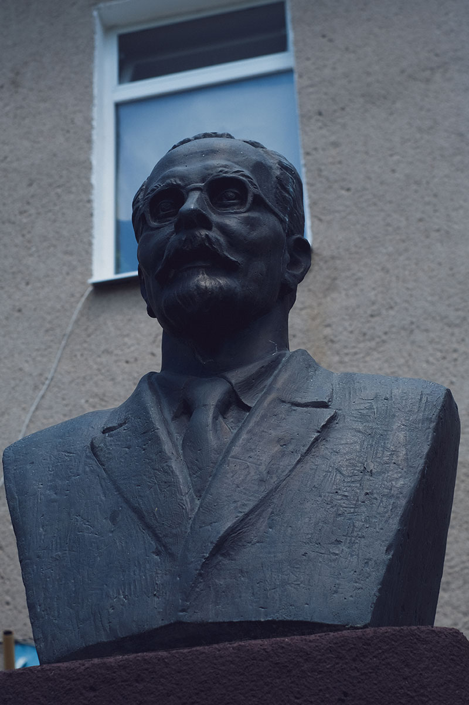
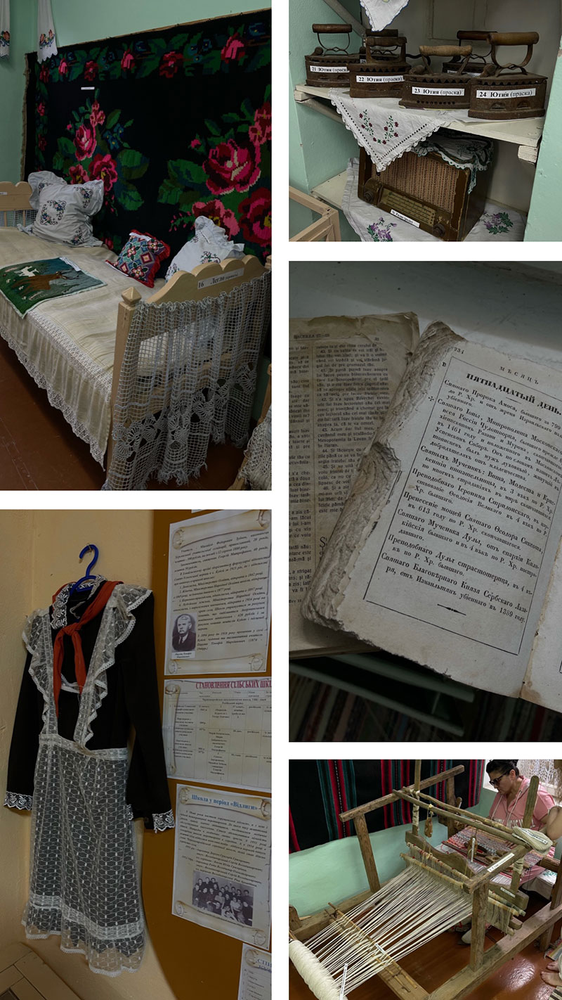
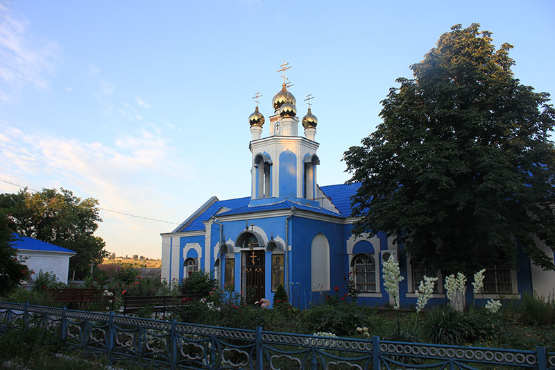
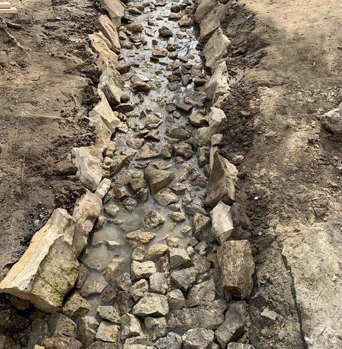

Школа имени Александра Теодорова-Балана

Школа была основана в 1818 году и считается одной из главных достопримечательностей села Кубей благодаря своей богатой истории. Первая капитальная реконструкция и постройка нового здания школы состоялись в 1954 году. А через полвека — в 2016-м — она была названа в честь академика Александра Теодорова-Балана. Сегодня на ее территории установлен памятник этому великому ученому.
Александр Теодоров-Балан — легендарный уроженец села Кубей. Он знаменит тем, что стал первым ректором Софийского университета и автором 900 уникальных исследований о болгарском языке.
Краеведческий музей в школе имени Александра Теодорова-Балана

Музей был основан в 2000 году по инициативе педагогического состава школы. Абсолютно все здешние экспонаты были собраны учениками и их родителями.
В первой комнате музея собраны предметы быта и одежда ручной работы, начиная с 1930 года. Вторая комната рассказывает историю села. Экспонатов в музее было всегда много, поэтому администрация решила делиться ими с другими музеями Одесской области.
Одной из особенных вещей здесь считается сложный ткацкий станок, который не могли собрать в течении нескольких дней!
Церковь Успения Святой Богородицы

Церковь была построена в 1818-1821 годах и расположилась в центре Кубея. Сначала она была небольшим домиком из глины и камыша, где селяне молились и плели из хвороста. Но вскоре Преосвященный Дмитрий по просьбе Глизяна сложил резолюцию про разрешение жителям села Кубей построить церковь и назвать её именем Успения Святой Богородицы.
В конце октября 1821 года началась подготовка дома к осветлению.
18 ноября 1821 года — особенный день для кубейцев. Он считается датой основания Успенской церкви Святой Богородицы села Кубей.
До сих пор Успенский храм Святой Богородицы является центром духовной и культурной жизни, олицетворяя верность их религиозно-этических основ и распространение «просвещения» среди населения.
Парк-Дендарий

Масштабный и живописный, Парк-дендрарий Кубея был основан в 1971 году и до сих пор является местом притяжения для натуралистов. Здесь они могут больше узнать про флору и фауну региона, его микроклимат, исследовать возможности сохранения редких видов растений и животных. А еще частые гости здесь — местные жители и все, кто заботится о своем здоровье, наслаждаясь видами Кубея.
Родничок «Читак»

Родничок «Читак» место для отдыха и уединения с природой. Туристы и местные жители приходят к источнику, чтобы набрать чистой минеральной воды. Символично, что именно здесь сохраняются традиции проведения обрядов на праздник Ивана Купала.
Независимо от дня недели и времени года, все желающие могут посетить это место, отведать водицы и зарядиться особой энергией. И непременно испытать дзен вдали от городской суеты!